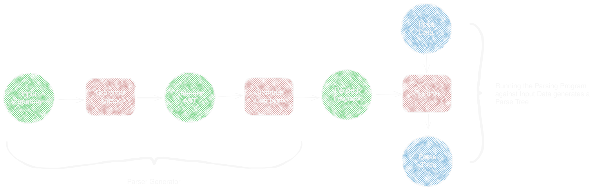
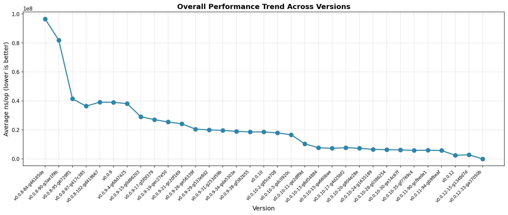

langlang during my
recurse batchlanglang in one hackathon at workit is a thing that takes raw input and produces structured output
input
4 + 3 * 2
Output
E
├── E
│ └── "4"
├── "+"
└── E
├── E
│ └── "3"
├── "*"
└── E
└── "2"
Top-Down (Predictive): Recursive Descent, Combinators, LL(k), Packratclass Parser:
cursor: int
source: str
def literal(self, e):
c = self.source[self.cursor]
if c == e:
self.cursor += 1
return c
raise Error(f"Expected {e}, but got {c}")
def zero_or_more(self, expression):
output = []
while True:
try:
output.append(expression())
except:
break
return output
def choice(self, alternatives):
cursor = self.cursor
for alternative in alternatives:
try:
return alternative()
except:
self.cursor = cursor # backtracking
raise Error(f"dunno wat to do")
class SheepLang(Parser):
def parse(self):
output = [self.literal("b")]
output.extend(self.zero_or_more(lambda: self.choice([
lambda: self.literal("a"),
lambda: self.literal("e"),
])))
output.append(self.literal("h"))
return output
>>> SheepLang("baaah").parse()
['b', 'a', 'a', 'a', 'h']
>>> SheepLang("beeeeh").parse()
['b', 'e', 'e', 'e', 'e', 'h']
def any_(self):
if self.cursor < len(self.source):
c = self.source[self.cursor]
self.cursor += 1
return c
raise Error("EOF")
def literal_range(self, a, b):
c = self.source[self.cursor]
if c >= a and c <= b:
self.cursor += 1
return c
raise Error(f"Expected [{a}-{b}], but got {c}")
def one_or_more(self, expression):
output = [expression()]
output.extend(self.zero_or_more(expression))
return output
def not_(self, expression):
cursor = self.cursor
try:
expression()
except:
return
finally:
self.cursor = cursor # doesn't ever consume input
raise Error("NOT")
def parse_decimal(self):
return ''.join(self.one_or_more(
lambda: self.literal_range("0", "9")))
def parse_string(self):
output = [self.literal('"')]
def char():
self.not_(lambda: self.literal('"'))
return self.any_()
output.append(''.join(self.zero_or_more(char)))
output.append(self.literal('"'))
return output
|
|
>>> ListLang("()").parse()
['(', ')']
>>> ListLang('"foo"').parse()
['"', 'foo', '"']
>>> ListLang('(42)').parse()
['(', ['42'], ')']
>>> ListLang('(42 "a str")').parse()
['(', ['42'], ['"', 'a str', '"'], ')']
>>> ListLang('(41 42 (43 44 (45 46)))').parse()
['(', '41', '42', ['(', '43', '44', ['(', '45', '46', ')'], ')'], ')']
SheepLang <- 'b' ('a' / 'e')* 'h'
Value <- Decimal / String / List
Decimal <- [0-9]+
String <- '"' (!'"' .)* '"'
List <- '(' (!')' Value)* ')'
JSON <- Value !.
Value <- Object / Array / String / Number / 'true' / 'false' / 'null'
Array <- '[' (Value (',' Value)*)? ']'
Object <- '{' (Member (',' Member)*)? '}'
Member <- String ':' Value
Number <- '-'? [0-9]+
String <- '"' (!'"' .)* '"'
| sequence | e1 e2 |
|
| ordered choice | e1 / e2 |
|
| not predicate | !e |
|
| and predicate | &e |
(sugar for !!e) |
| zero or more | e* |
|
| one or more | e+ |
(sugar for ee*) |
| optional | e? |
(sugar for &ee / !e) |

class PEG(Parser):
def parse_grammar(self):
defs = self.one_or_more(self.parse_definition)
return ['Grammar', defs]
def parse_definition(self):
ident = self.parse_identifier()
self.parse_spaces()
self.literal("<")
self.literal("-")
self.parse_spaces()
expr = self.parse_expr()
return ['Def', [ident, expr]]
# ...
Sheep <- 'b' ('a' / 'e')* 'h'
Grammar (1:1..2:1)
└── Definition[Sheep] (1:1..2:1)
└── Sequence (1:10..2:1)
├── Literal[b] (11..12)
├── ZeroOrMore (14..26)
│ └── Choice (15..24)
│ ├── Sequence (15..19)
│ │ └── Literal[a] (16..17)
│ └── Sequence (21..24)
│ └── Literal[e] (22..23)
└── Literal[h] (28..29)
def visit_definition(self, definition):
ident, expr = definition
self.output.write(f"def parse_{ident}(self):")
self.output.ident()
self.visit_expr(expr)
self.output.unident()
# ...
def visit_literal(self, literal):
self.output.write(f"self.literal('{escape(literal)}')")
class Frame:
t: 'Backtracking' | 'Call'
pc: int
cursor: int
type Instruction = Halt | Char | Choice | Commit | ...
class VirtualMachine:
source: str = ""
cursor: int = 0
code: list[Instruction] = []
pc: int = 0
stack: list[Frame] = [] # stack frame
def run(self):
while True:
instruction = self.code[self.pc]
match instruction:
case Halt():
break
# ...
Char X
〈pc,cursor,stack〉-> Char X ->〈pc+1, cursor+1, stack〉
# when source[cursor] == X
〈pc,cursor,stack〉-> Char X -> Fail〈e〉
# when source[cursor] != X
Choice L
〈pc,cursor,stack〉 -> Choice l ->〈pc+1,cursor, (pc+l,cursor) : stack〉
Commit L
〈pc,cursor,head : stack〉-> Commit l ->〈pc + l, cursor, stack〉
case Char(ch=ch):
current = self.source[self.cursor]
if current == ch:
self.cursor += 1
self.pc += 1
continue
self.fail()
case Choice(label=label):
frame = Frame(t=FrameType.BACKTRACKING, pc=label, cursor=self.cursor)
self.stack.append(frame)
self.pc += 1
case Commit(label=label):
self.stack.pop()
self.pc = label
def fail(self):
while len(self.stack) > 0:
frame = self.stack.pop()
if frame.t == FrameType.BACKTRACKING:
self.pc = frame.pc
self.cursor = frame.cursor
return
raise Exception("Error!")
p∗ ≡ Choice |p| + 2
p
Commit − (|p| + 1)
p1/p2 ≡ Choice |p1| + 2
p1
Commit |p2| + 1
p2
SheepProgram = [
Char("b"), # 00
Choice(7), # 01 -------------+
Choice(5), # 02 -+ |
Char("a"), # 03 | |
Commit(6), # 04 | |
Char("e"), # 05 -+- choice |
Commit(1), # 06 -+-----------+- repetition
Char("h"), # 07
Halt(), # 08
]
langlang.peg?
| version | optimizations | impact |
|---|---|---|
| v0.0.8 | tree-walking interpreter | baseline |
| v0.0.9 | bytecode VM + charset Set/Span | ~50x |
| v0.0.9 | inlining, hoist vars, drop Input interface | ~2x on top |
| v0.0.11 | cap frames arena, SoA tree, pre-compile labels, bitset in recovery check | 0 allocs/op |
| parser | MiB/s | vs stdlib |
|---|---|---|
| buger-skim ¹ | 479.0 | 4.36× |
| langlang-stripped-nocap | 289.0 | 2.63× |
| buger-jsonparser ² | 231.6 | 2.11× |
| pointlander-stripped | 193.1 | 1.76× |
| langlang-stripped | 173.7 | 1.58× |
| pointlander | 112.2 | 1.02× |
| encoding/json (stdlib) | 109.8 | 1.00× |
| langlang-nocap | 66.9 | 0.61× |
| langlang | 34.5 | 0.31× |
| antlr | 19.3 | 0.18× |
| treesitter | 14.6 | 0.13× |
| pigeon | 2.6 | 0.02× |
| parser | allocs/op | B/op |
|---|---|---|
| buger-skim | 0 | 0 |
| langlang-nocap | 0 | 0 |
| langlang-stripped-nocap | 0 | 0 |
| langlang-stripped | 0 | 83 KiB |
| langlang | 0 | 2.0 MiB |
| treesitter | 6 | 760 KiB |
| buger-jsonparser | 34,117 | 541 KiB |
| pointlander-stripped | 46 | 13.7 MiB |
| pointlander | 52 | 37.0 MiB |
| encoding/json | 75,750 | 3.5 MiB |
| antlr | 337,483 | 32.0 MiB |
| pigeon | 4,421,017 | 155.0 MiB |
| Grammar with labels | Text Input |
|
|
| Output |
|---|
|
// recovery expressions
eq <- (![0-9a-z] .)*
value <- (!';' .)*
semi <-
...
├── Assign (2:1..2:6)
│ └── Sequence<4> (2:1..2:6)
│ ├── Name (2:1..2:2)
│ │ └── "y" (2:1..2:2)
│ ├── "=" (2:3..2:4)
│ ├── Error<value> (2:5) <- error label captured
│ └── ";" (2:5..2:6)
...
|
|
|
|
Try it yourself
Thank you and let's chat :)